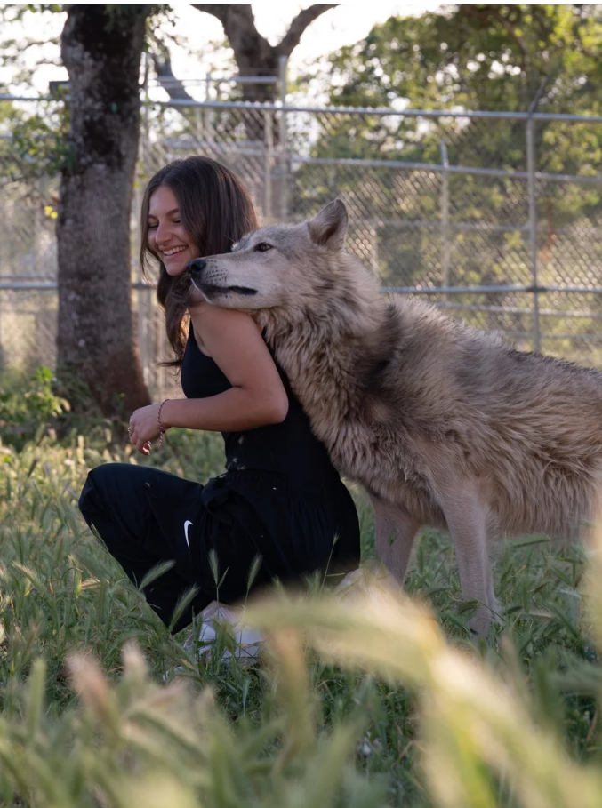
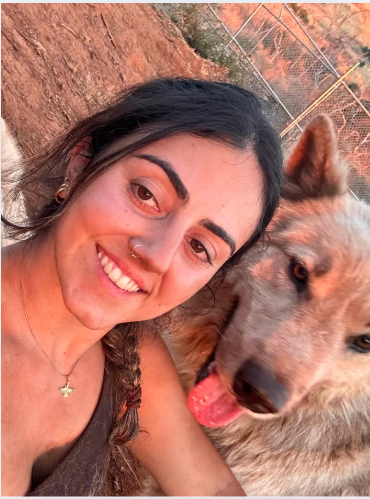

Anjali Ranadive
FOUNDER & PRESIDENT
Anjali Ranadive founded WFW at UC Berkeley to unite women passionate about conservation.
After rescuing a wolf-dog from a local shelter, she recognized the urgent need to protect them
and started the sanctuary. As an environmentalist, artist, and sports professional, she uses
her platform to fight for policy change, educate the public, and keep high-risk animals out of kill shelters.

Reena Hachme
CO-FOUNDER & VICE-PRESIDENT
Reena joined Women for Wolves in 2022 with a Marketing and Communications degree,
using her skills to promote wolf conservation.
She has also volunteered on environmental projects relating to plastic pollution.
As Co-Founder, her focus is women’s empowerment and sanctuary operations.
Sofía Hughes
SANCTUARY DIRECTOR & CEO OF REWILDING
Sofía’s journey began three years ago when she rescued her reactive German Shepherd, Blue.
Through patience and training, she helped him overcome his fears and built
a deep understanding of animal behavior. Now, she provides transformative care
to rescued wolf-dogs and leads rewilding and rehabilitation work.

Tara Dehdari
DIRECTOR OF TECHNOLOGY
Tara combines her passion for animals with her love of technology and design.
She helps manage the sanctuary’s animal care while also leading the development
of the Women for Wolves website. Through her work, she aims to create
a strong digital presence that supports rescue efforts and shares the stories
of the animals she helps care for.
Jill Lute
DIRECTOR OF REHABILITATION
Jill Lute served as Senior Keeper at a Northern California sanctuary for over a decade.
She has rescued many wolf-dogs throughout her life and career, and is an expert on wolf-dog trauma,
behavior, and stabilization. Jill’s experience is critical to sanctuary safety and care.
Veronica Figueroa
DIRECTOR OF CONTENT & FILM
Veronica documents the sanctuary’s work through visual storytelling.
Her focus is dignity for the animals — not shock content. Through film and media,
she builds empathy and pushes back against misinformation around wolf-dogs.
Jessica Hernandez
DIRECTOR OF INDIGENOUS LEADERSHIP
Jessica is a Maya Ch’orti and Binnizá-Zapotec environmental scientist, author,
and researcher at the University of Washington. Her work centers on climate,
energy, and environmental justice, weaving Indigenous knowledge and Western science
to build more just and sustainable futures. Through her leadership we strengthen
partnerships with tribes, elevate Indigenous voices, and ensure that traditional
ecological knowledge guides our programs.

Diego Lopez
DIRECTOR OF CONSTRUCTION & DEVELOPMENT
Diego oversees sanctuary development, habitat builds, and structural safety.
He is responsible for creating secure, enriched enclosures that protect animals
and meet behavioral needs, especially for high-content wolf-dogs coming out of crisis.